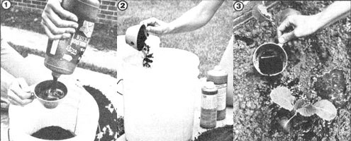

[1] and [2] To mix up a batch of kickabrew, combine 1 part fish emulsion, 2 parts kelp, 10 parts dried cow manure, and 50 parts water. [3] Pour half the measure over the leaves of your plants, spread the rest at the bases of their stems ... and then watch your greenery grow!